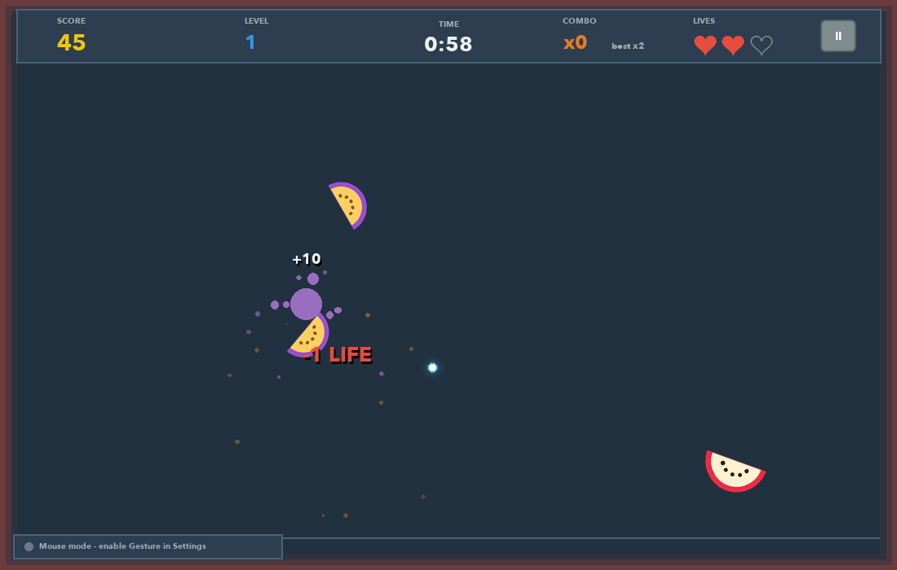
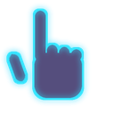
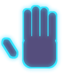
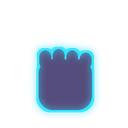
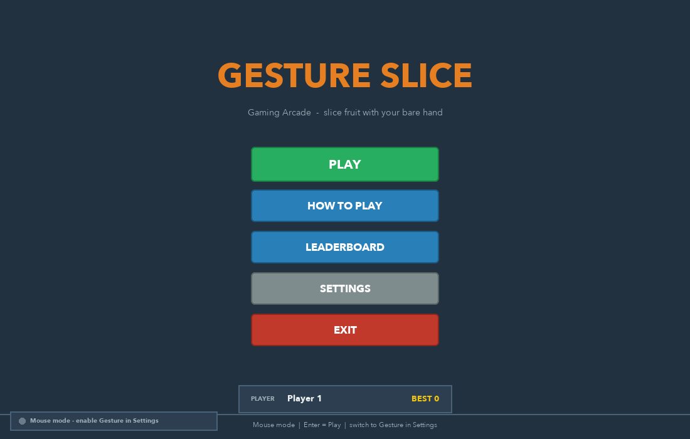
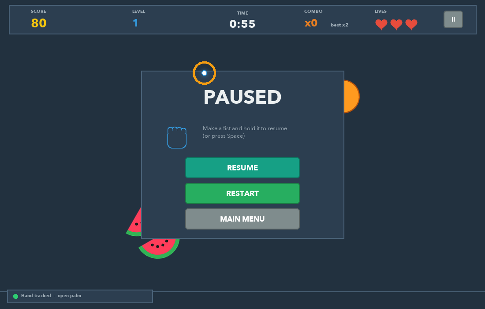
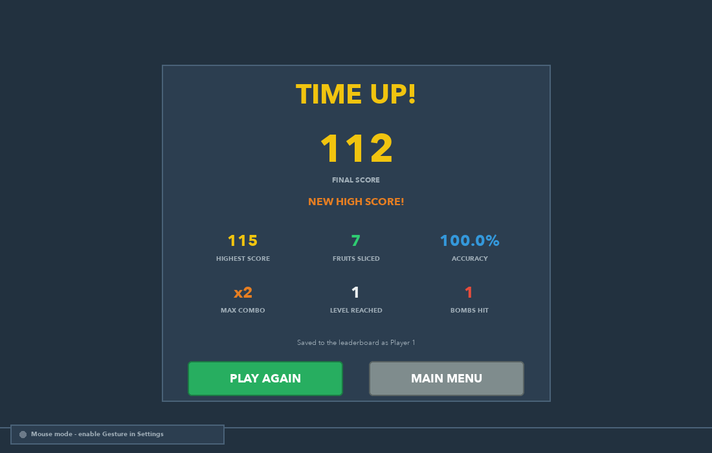
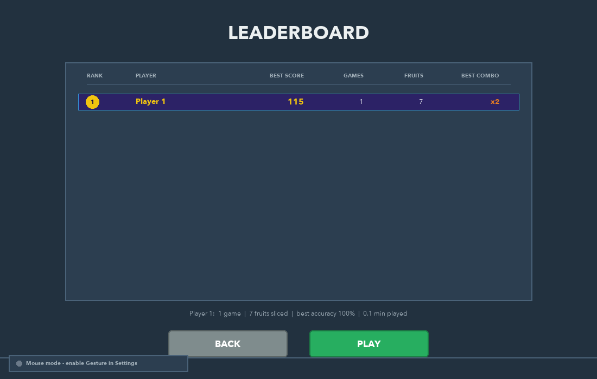

Real hand tracking
OpenCV webcam capture + MediaPipe Hands (21 landmarks) on a background thread, so the game never stutters.
APP project · Python desktop game
Slice fruit with your bare hand. Your webcam tracks your index fingertip in real time and turns it into a knife. No mouse, no keyboard, no controller.

OpenCV webcam capture + MediaPipe Hands (21 landmarks) on a background thread, so the game never stutters.
One Euro filter smoothing, velocity-based slicing and a trail that follows your fingertip.
Open palm pauses, a fist resumes, and hovering a fingertip presses menu buttons. Fully hands-free.
Physics with gravity and spin, fruit split along your swipe, juice particles, combos, bombs, levels.
Players, sessions, high scores and statistics stored with transactions and UPSERTs.
Pre-drawn images, reused canvas items and only updating what changed.

Your index fingertip is the blade. Aim anywhere on screen.
Quick movements cut. Slow ones only aim, so you can line up a combo.

Hold it still for 0.7 s to pause the game.

Hold it for 0.7 s to resume playing.


A fruit is cut when the shortest distance from its centre C to the fingertip's movement
A → B in one camera frame is at most its radius, and the movement is fast enough:
t = clamp(((C − A) · (B − A)) / |B − A|², 0, 1) P = A + t (B − A) cut ⇔ |C − P| ≤ r and speed ≥ threshold


Gesture Slice is a desktop application. It opens its own window and uses your webcam, so it runs on your computer, not in the browser. You need Python 3.9–3.12 (3.11 recommended).
git clone https://github.com/s-shriya2288/APP-project.git cd APP-project
python3.11 -m venv .venv source .venv/bin/activate # Windows: .venv\Scripts\Activate.ps1
pip install -r requirements.txt
python main.py
No webcam? The game automatically switches to mouse control.